Introduction to the Student Data Aggregation Calculator
The Student Data Aggregation Calculator (SDAC) is intended for users who want to identify subsets of students across the inBloom Data Store.
The Student Data Aggregation Calculator is a flexible and intuitive application that allows educators to create flags with specific conditions, and run those conditions across the student database to identify subsets of students who meet the criteria. The flags can be saved for future use, creating an easy-to-use tool that can quickly identify students.
Users have permissions assigned to them based on their role (i.e. Educator, IT Administrator). Some actions are only available to users with Administrator privileges. As an example, IT Administrators are able to create public flags, where an Educator with default permissions will not have the required permissions. This is an aspect to be aware of when creating, editing, or deleting public flags.
For information about your current permission level, please contact your district administrator.
For information on how to start using the SDAC with a Sandbox account, visit the SDAC Tutorial
Search
Overview
The Search page provides the ability to find an existing flag in the system. Flags you have created, as well as, public flags may appear in the list.
Search Bar
Allows you to search for flags based on the name, description or keyword defined for each flag. Once you begin typing in the search field, the list of flags will start to filter dynamically based on corresponding matches found using the letters or words you type. Note: The results will only match on the name, description or keyword fields.
Show Public Flags
Check this option to include flags that are defined as public in the search results.
Note: Public flags can only be created, edited and deleted by someone with Administrator privileges.
Actions
For each flag that appears in the Search list, the following actions may be performed by clicking on the corresponding icon.
Run the Flag 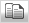 Copy the Flag Edit the Flag Save the Flag to Favorites Delete the FlagNew Flag
New Aggregate Flag
Results
Overview
The Results page displays a list of students based on the criteria defined for the selected flag. The name of the flag and description are prominently displayed above the list of students. The information displayed in the table includes Student ID, Student Name, Ethnicity, Gender, Grade Level and the field selected when the user created the flag.
Actions
Several additional options are available on the Results page including:
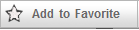Adds this flag to your list of favorites
Outputs the data displayed in the grid to a formatted Excel spreadsheet including column headings
Opens the Add/Edit page with pre filled information from the flag allowing you to create a copy of the flag
Opens the Add/Edit page allowing you to make changes to the current flag
Add Fields
Adding student information to the results of a flag is a simple process.
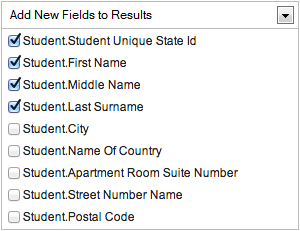
Click on the Add New Fields to Results drop down and you will see a list of available fields. Select the fields by clicking on the checkbox next to a field name. To deselect a field, simply uncheck the field.
The current version of the SDAC provides the ability to add fields from the Student Identification and Demographics group only. The list of fields selected are not saved with the flag.
Therefore, you will need to add fields to the results each time you run the flag.
Once you have selected the fields from the drop down, click the Update button to refresh the list of students. Once updated, the table will display the additional columns selected.
Notes
1. Results are limited based on School, Course and Section selected
2. Each column in the data grid can be sorted by clicking on the column header
Add/Edit Flag
Overview
The Add/Edit page allows you to add or edit a flag using a visually engaging step-by-step approach. Prior to defining a flag, you must enter a Name and Description for the flag. You may also enter optional Keywords to add further relevance for each flag and to better assist in the search of flags.
If you are logged on as a District Admin, the option to set a flag as Public will be made available.
Adding a New Flag
The process for adding a new flag is as follows:
Step 1: Select a Data Element
The user begins by typing the word that describes the name of the data element they are interesting in using. This causes the list to begin filtering data elements so only the most relevant data elements appear in the list. Once the user clicks on the data element it will appear highlighted and display in the Preview section indicating the field is now selected. The list of data elements is also sortable by Name or Description columns. If the user chooses to do so, they may scroll through the list and select a data element.
Step 2: Apply a Condition
Depending on the data type of the data element selected, the application will automatically disable operators in the list that are invalid for that data type. For example, when a user selects a numeric data type such as GPA, the Starts with, Does not start with, Ends with and Does not end with operators will be grayed out. This will enhance the user experience by eliminating invalid selections.
The following operators are available for selection. Only one operator may be selected at a time.
| Is equal to | Starts with | Is between |
| Is not equal to | Does not start with | Is not between |
| Is greater than | Ends with | Is one of |
| Is greater than or equal to | Does not end with | Is not one of |
| Is less than | Contains | Is blank or empty |
| Is less than or equal to | Does not contain | Is not blank nor empty |
Step 3: Set the Value
Enter a value in the textbox which will determine the output of the flag.
The application will perform basic validation to ensure input values match the data type of the data element selected. For example, if you select Enrollment Date, the textbox will become a date picker. Another example, if you select Rank, the textbox will only allow numbers to be entered.
Step 4: Preview and Save
As you progress from Step 1 through Step 3, the Preview pane continually updates and displays the selected data element, operator and values entered. This provides a visual representation of the flag definition before clicking the Save button.
Once the flag is defined, click the Preview button to executive the flag. The application will retrieve 5 records for you to view in the preview data grid. This ensures you have set the flag as intended and will aid you from having to click Save and run the flag continually in a separate screen.
You can continue modifying the flag and click Save once you are satisfied the flag has been defined correctly.
Note 1: The Flag Name must be unique within your list of defined flags. Public Flags must also be unique but only within the domain of Public Flags.
Note 2: The Copy Flag feature is similar to the Edit Flag feature except in that you must define a new Name for the flag.
Aggregate Flag
Overview
An Aggregate Flag is the combination of multiple flags defined as either private (created by you) or Public (created by an Admin user) and which allows you to perform advanced analysis of student data. By aggregating individual flags, you can identify students with very specific qualities or factors. As an example, you may wish to create an Aggregate Flag called High Performing Underprivileged Students that consists of the following flags:
Honor Roll
Free and Reduced Lunch
English Language Learner
The application will perform the necessary aggregation of each data set for the individual flags resulting in the list of students that meet these collective criteria. The results of an Aggregate Flag only includes students that are inclusive of each individual flag. Using the example above, the High Performing Underprivileged Students flag will only list students that appear in the Honor Roll AND Free and Reduced Lunch AND English Language Learner flags.
Adding a New Aggregate Flag
The steps required to create an Aggregate Flag are as follows.
Enter a Name for the flag.
Enter a Description for the flag.
Enter optional Keywords to add further relevance for each flag and to better assist in the search of flags.
If you are logged on as a District Admin, the option to set a flag as Public will be made available.
Select flags from the list using one of the following methods
Search: Search for flags based on the name, description or keyword defined for each flag. Once you begin typing in the search field, the list of flags will start to filter dynamically based on corresponding matches found using the letters or words you type.
Drag and Drop: Select a flag from the list of flags and move it to the list on the right by clicking on the right arrow or by dragging and dropping the flag.
Click Save once you are satisfied the Aggregate Flag has been defined correctly.
Note: Check the Show Public Flags option to include flags that are defined as public in the search results.
Run the Aggregate Flag
Once an Aggregate Flag is saved, you may access and view the flag by using one of the following methods:
Select the flag from the My Flags drop down
Locate flags on the Search page which have the following icon
Note: This version of the SDAC limits the number of individual flags that can be added to an Aggregate to five. When combining some flags, the application may prompt you that the selected flags may not be combined due to the source of each flags data element.
About
Student Data Aggregation Calculator was developed for inBloom, Inc. by Upeo, LLC (www.upeo.com). This software is made available as open-source under the Apache License, Version 2.0.
For application support, please contact your school district technology support center.
SDAC Tutorial on Creating and Using Flags
This is a brief tutorial to show a new user how to create and use flags with the Student Data Aggregation Calculator (SDAC). To get to the SDAC application, simply enter dac.inbloom.org into a web browser. Next, the user will be prompted to enter their inBloom username and password.
After a user logs in to inBloom, the user will be prompted to select a Data Set and virtual Sandbox User.
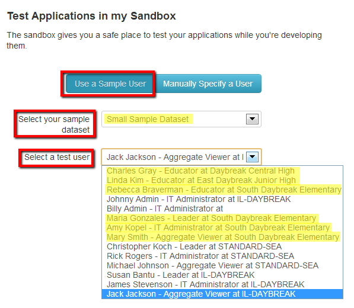We recommend selecting the Small Data Set and one of the virtual Sanbox Users highlighted in the image above. The users are also listed in the following table:
| Name | Role | Permission Level |
|---|---|---|
| Charles Gray | Educator | Non-Administrator |
| Linda Kim | Educator | Non-Administrator |
| Rebecca Braverman | Educator | Non-Administrator |
| Maria Gonzales | Leader | Non-Administrator |
| Amy Kopal | IT Administrator | Administrator |
| Mary Smith | Aggregate Viewer | Non-Administrator |
The user should choose a virtual Sandbox User based on the level of privileges the user needs while using the SDAC.
Adminstrator permission levels give the user the ability to create, edit and delete public flags in the SDAC. Public flags can be accessed by multiple users. Without adminstrator priviledges, the user can create personal flags and save them for personal use; however, no other users will be able to access these personal flags.
Creating a New Flag
After selecting the Data Set and Sandbox User, the user will be redirected to the SDAC home page.
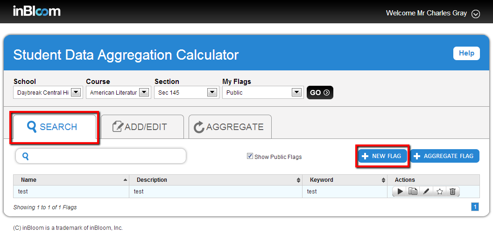The SDAC home page will have the "Search" tab selected, as shown in the previous image. In order for the user to create their first flag, the user can click on the "New Flag" button. This button is shown in the previous image.
After clicking on the "New Flag" button, the SDAC will change from the "Search" tab to the "Add/Edit" tab.
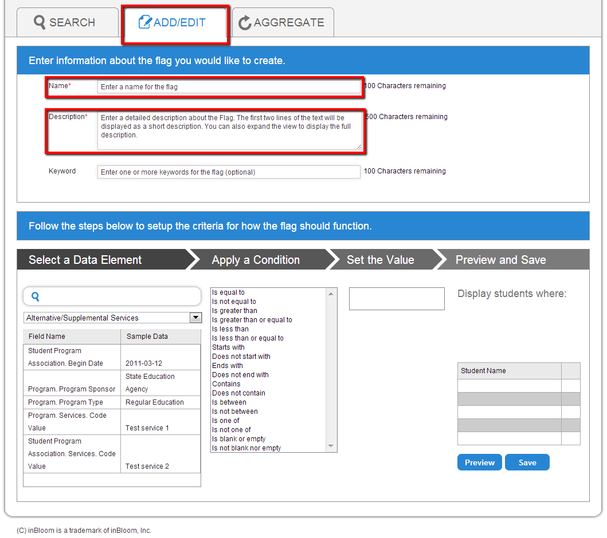To create a new flag, the user must enter a name and a description for the flag. The location of the "Name" and "Description" fields are shown in the previous image.
For this example, the flag will take the following values:
| Field | Value |
|---|---|
| Name | GPA above 3.00 |
| Description | Lists students with grade point averages above 3.00 |
| Keyword | HonorRoll |
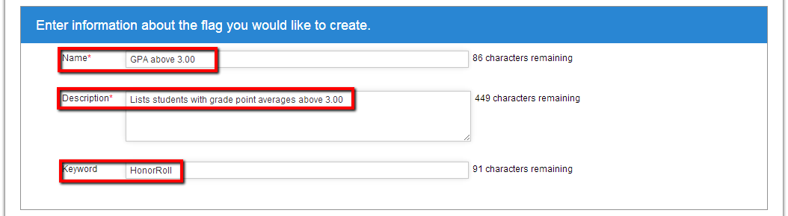
Next, the user must select a data element. Data elements are the type of data the flag is searching to find.
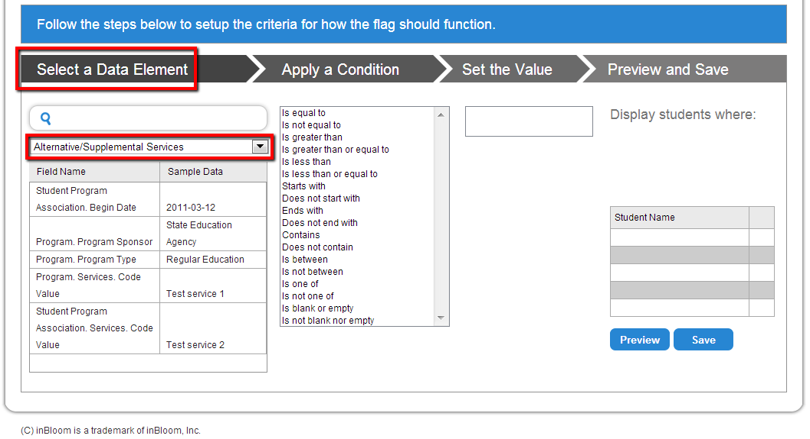InBloom's Small Data Set, which was recommended as the data set to select, does not values entered for every field in the inBloom API. Below is a list of the data fields that have values and are recommended for creation of new flags.
- Gender
- Grade point average (GPA)
- Student's name
- Home address
- Number of absences (between 0 and 2)
- Number of tardies (between 0 and 2)
For this example, the flag will take the following values:
| Field | Value |
|---|---|
| Data Element | Student Academic Record |
| Data Sub-Element | Cumulative Grade Point Average |
| Condition | Is greater than |
| Value | 3.00 |
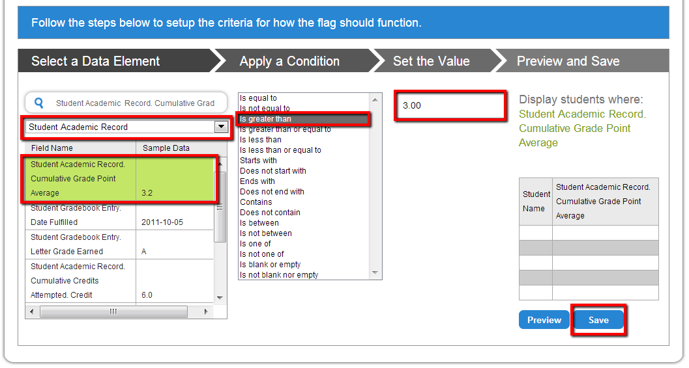
After selecting the following values, the user simply presses the "Save" button in the lower right corner. The user returns to the search page with the new flag is now located in the list of available flags.
Using a Flag
In order to run the new flag, simply click the "Run" button (contains a triangle symbol) located within the Action column of the new flag, "GPA above 3.00".
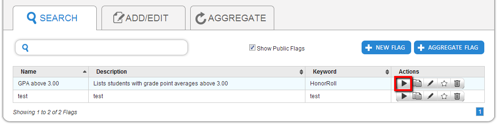The user will be sent to a Results page where all the students in the selected Data Set with a GPA above 3.00 will be listed.
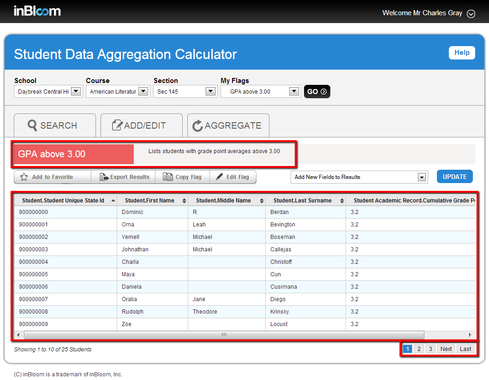The Search page shows the flag name and description, along with the list of students that match the query. There is a maximum of 10 students displayed on the page. To see the next page of students, click on the "Next" button in the bottom right corner of the Search page.
This is how new flags are created and used to filter students into lists based on user-defined parameters.